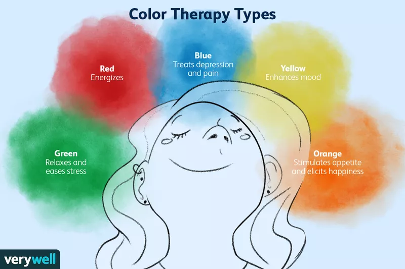

|
What is Color Therapy? Types of color Therapy What color therapy can help with |
 |
What is color Therapy?Color therapy, also known as chromotherapy, is a form of therapy that uses the colorand light to treat certain mental and physical health conditions. We can trace this form of therapy back to the ancient Egyptians. They mase use of sun-filles rooms with colored glasses for therapecutic purpose. Types of color therapyIn color therapy, different colors are used thought to be able to treat various conditions. Color therapists believe that a lack of a perticular color in your body might be responsible for your living conditions. Here's a list the most common colors used during color thearpy and how we can use them.
What color therapy can help withColor therapy has a host of uses.There's some evidence to suggest that it can help with some of the following conditions.
|